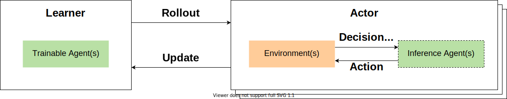

RL Toolkit¶
MARO provides a full-stack abstraction for reinforcement learning (RL), which empowers users to easily apply predefined and customized components to different scenarios in a scalable way. The main abstractions include Learner, Actor, Agent Manager, Agent, Algorithm, State Shaper, Action Shaper, Experience Shaper, etc.
Learner and Actor¶
{kind=link}
Learner is the abstraction of the learnable policy. It is responsible for learning a qualified policy to improve the business optimized object.
# Train function of learner. def learn(self): for exploration_params in self._scheduler: performance, exp_by_agent = self._actor.roll_out( self._agent_manager.dump_models(), exploration_params=exploration_params ) self._scheduler.record_performance(performance) self._agent_manager.train(exp_by_agent)
Actor is the abstraction of experience collection. It is responsible for interacting with the environment and collecting experiences. The experiences collected during interaction will be used for the training of the learners.
# Rollout function of actor. def roll_out(self, models=None, epsilons=None, seed: int = None): self._env.reset() # load models if model_dict is not None: self._agents.load_models(model_dict) # load exploration parameters: if exploration_params is not None: self._agents.set_exploration_params(exploration_params) metrics, decision_event, is_done = self._env.step(None) while not is_done: action = self._agents.choose_action(decision_event, self._env.snapshot_list) metrics, decision_event, is_done = self._env.step(action) self._agents.on_env_feedback(metrics) details = self._agents.post_process(self._env.snapshot_list) if return_details else None return self._env.metrics, details
Scheduler¶
A Scheduler is the driver of an episodic learning process. The learner uses the scheduler to repeat the
rollout-training cycle a set number of episodes. For algorithms that require explicit exploration (e.g.,
DQN and DDPG), there are two types of schedules that a learner may follow:
Static schedule, where the exploration parameters are generated using a pre-defined function of episode number. See
LinearParameterSchedulerandTwoPhaseLinearParameterSchedulerprovided in the toolkit for example.Dynamic schedule, where the exploration parameters for the next episode are determined based on the performance history. Such a mechanism is possible in our abstraction because the scheduler provides a
record_performanceinterface that allows it to keep track of roll-out performances.
Optionally, an early stopping checker may be registered if one wishes to terminate training when certain performance requirements are satisfied, possibly before reaching the prescribed number of episodes.
Agent Manager¶
The agent manager provides a unified interactive interface with the environment for RL agent(s). From the actor’s perspective, it isolates the complex dependencies of the various homogeneous/heterogeneous agents, so that the whole agent manager will behave just like a single agent. Furthermore, to well serve the distributed algorithm (scalable), the agent manager provides two kinds of working modes, which can be applied in different distributed components, such as inference mode in actor, training mode in learner.

In inference mode, the agent manager is responsible to access and shape the environment state for the related agent, convert the model action to an executable environment action, and finally generate experiences from the interaction trajectory.
In training mode, the agent manager will optimize the underlying model of the related agent(s), based on the collected experiences from in the inference mode.
Agent¶
An agent is a combination of (RL) algorithm, experience pool, and a set of non-algorithm-specific parameters (algorithm-specific parameters are managed by the algorithm module). Non-algorithm-specific parameters are used to manage experience storage, sampling strategies, and training strategies. Since all kinds of scenario-specific stuff will be handled by the agent manager, the agent is scenario agnostic.

class AbsAgent(ABC):
def __init__(self, name: str, algorithm: AbsAlgorithm, experience_pool: AbsStore = None):
self._name = name
self._algorithm = algorithm
self._experience_pool = experience_pool
Algorithm¶
The algorithm is the kernel abstraction of the RL formulation for a real-world problem. Our abstraction
decouples algorithm and model so that an algorithm can exist as an RL paradigm independent of the inner
workings of the models it uses to generate actions or estimate values. For example, the actor-critic
algorithm does not need to concern itself with the structures and optimizing schemes of the actor and
critic models. This decoupling is achieved by the LearningModel abstraction described below.

choose_actionis used to make a decision based on a provided model state.trainis used to trigger training and the policy update from external.
class AbsAlgorithm(ABC):
def __init__(self, model: LearningModel, config):
self._device = torch.device("cuda" if torch.cuda.is_available() else "cpu")
self._model = model.to(self._device)
self._config = config
Block, NNStack and LearningModel¶
MARO provides an abstraction for the underlying models used by agents to form policies and estimate values.
The abstraction consists of a 3-level hierachy formed by AbsBlock, NNStack and LearningModel from
the bottom up, all of which subclass torch’s nn.Module. An AbsBlock is the smallest structural
unit of an NN-based model. For instance, the FullyConnectedBlock provided in the toolkit represents a stack
of fully connected layers with features like batch normalization, drop-out and skip connection. An NNStack is
a composite network that consists of one or more such blocks, each with its own set of network features.
The complete model as used directly by an Algorithm is represented by a LearningModel, which consists of
one or more task stacks as “heads” and an optional shared stack at the bottom (which serves to produce representations
as input to all task stacks). It also contains one or more optimizers responsible for applying gradient steps to the
trainable parameters within each stack, which is the smallest trainable unit from the perspective of a LearningModel.
The assignment of optimizers is flexible: it is possible to freeze certain stacks while optimizing others. Such an
abstraction presents a unified interface to the algorithm, regardless of how many individual models it requires and how
complex the model architecture might be.

As an example, the initialization of the actor-critic algorithm may look like this:
actor_stack = NNStack(name="actor", block_a1, block_a2, ...)
critic_stack = NNStack(name="critic", block_c1, block_c2, ...)
learning_model = LearningModel(actor_stack, critic_stack)
actor_critic = ActorCritic(learning_model, config)
Choosing an action is simply:
learning_model(state, task_name="actor", is_training=False)
And performing one gradient step is simply:
learning_model.learn(critic_loss + actor_loss)
Explorer¶
MARO provides an abstraction for exploration in RL. Some RL algorithms such as DQN and DDPG require
explicit exploration, the extent of which is usually determined by a set of parameters whose values
are generated by the scheduler. The AbsExplorer class is designed to cater to these needs. Simple
exploration schemes, such as EpsilonGreedyExplorer for discrete action space and UniformNoiseExplorer
and GaussianNoiseExplorer for continuous action space, are provided in the toolkit.
As an example, the exploration for DQN may be carried out with the aid of an EpsilonGreedyExplorer:
explorer = EpsilonGreedyExplorer(num_actions=10)
greedy_action = learning_model(state, is_training=False).argmax(dim=1).data
exploration_action = explorer(greedy_action)